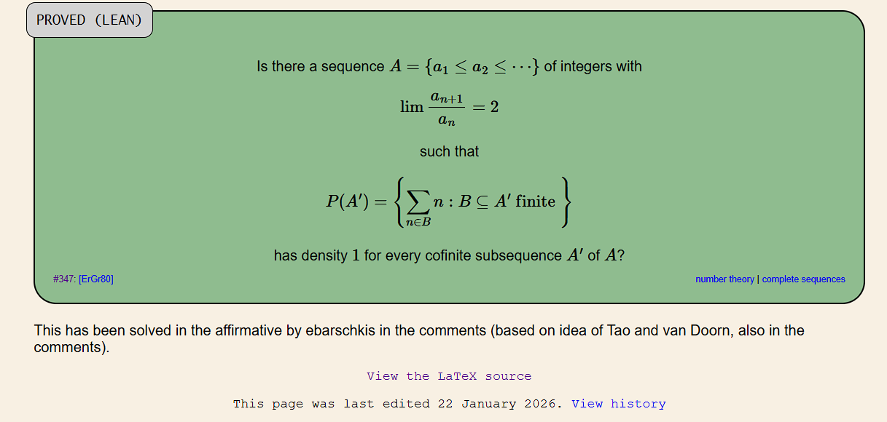

Erdős Problem #347

1.) What was the problem?
So the legendary Paul Erdős and Ronald Graham conjectured in their 1979 paper "Old and new problems and results in combinatorial number theory" whether there exists an growing sequence of integers \(a_1\leq a_2\leq a_3\leq \cdots\) whose terms roughly double:
Now let's remove any finite collection of the sequence's terms, then take any finite number of the suriving terms (a single one suffices as well) and then add them up using each term at most once. Let \(S\) contain every positive integer we can make this way.
We now want \(S\) to cover almost all the positive integers (keep in mind "almost all integers"). To see what that means, count how many of the numbers \(1,\ldots,N\) belong to \(S\), then divide by \(N\). As we count further, that fraction should approach 1:
The set \(S\) of sums may skip over infinitely many integers. That is allowed, as long as the missing numbers make up a fraction that tends to zero.
The difficulty is that the higher in the sequence you go, the sparser it gets. Every positive integer can be represented as a sum of distinct powers of two, which gives us the familiar binary representation. But remove even one of those powers, and we can no longer reach certain numbers with a sum of distinct terms.
2.) what was known before:
So by the time I got around to the discussion on the forum, there was an approach that I could build on. Now Graham had already constructed a sequence based on Fibonacci numbers with a stronger property, that you removed any finite number of terms and the sums of distinct remaining terms would still include every sufficiently large integer. The ratios of adjacent terms converge to the golden ratio, which is roughly \(1.618\), kids stuff.
However later on, Stefan Burr and Erdős showed in their paper two years later that this stronger property was impossible for a limiting ration higher than the golden ratio. To each \(2\), we would have to allow infinitely many missing integers and then prove that their proportion tends to zero.
43 years later, a now-collaborator of mine, Wouter van Doorn proposed approaching \(2\) extremely slowly, this garnered the attention of one of the most famous mathematicians of our time, Terence Tao, who further developed the idea by grouping the terms into blocks, so within each block, two different choices of terms could give sums exactly 1 apart and that switching between the two would allow us to correct small errors in an approximate representation.
Now his sketch only explained how the proof would work if the block sizes were fixed. The open question here was to rigorously prove, whether it was possible to let the blocks grow longer, but slow enough that the argument still worked, while ensuring the successive ratios converge to \(2\).
3.) My contribution
So when I got around to the problem, started by first trying to wrap my head around the problem, reading the comments, paper(s) and looking for other relevant literature. I then began by making a list of all the various prerequisites that the desired sequence needed to forfill.
Now, a few days before that, Sebastien Bubeck from OpenAI (from whom I later received a commendation) had posted about how they had greatly improved GPT-5.1 and 5.2 (SOTA models back then, believe it or not) at mathematical work. So I tried one-shotting the problem for the fun of it, which, of course, lead to the model spewing out some nonsense. But by cleverly decomposing the problem into various subproblems I could have the clankers help me chew on my various ideas. Now most of the AI used here was in Codex to help me write all the code. So, when trying to pry out novel ideas out of the model back then lead to just some weird and useless reformulation of the problem or just complete BS. Occasionally it had the one or two somewhat clever and nontrivial ideas, but in the grand scheme of things, they were mostly what I would call "constant-factor improvements", not greater "asymptotic" ones.
Over time, I exchanged my findings with other mathematicians on and off the forum, like Bartosz Naskrecki, which I had met on my research for discrete logarithms, Boris Alexeev and Wouter van Doorn. I kept experimenting computationally using NumPy and SageMath. I was very surprised how good the models were at implementing my ideas in code, but tbh I admit that my coding skills are horrendous, so it isn't hard to impress me there. Anyways, one evening on the 21st of January I finally managed to construct the desired sequence. I had the bot write up the paper for me and I shoved it directly into Aristotle, a formalization agent by Harmonic, which formally proved everything in Lean. I immediately contacted the other to inform them about my breakthrough. After a short discussion and some preliminary checks, I released the proof to the forum.
Surprisingly, Tao himself personally proof-checked it and gave it the green light just an hour later. Safe to say I was very proud that day!